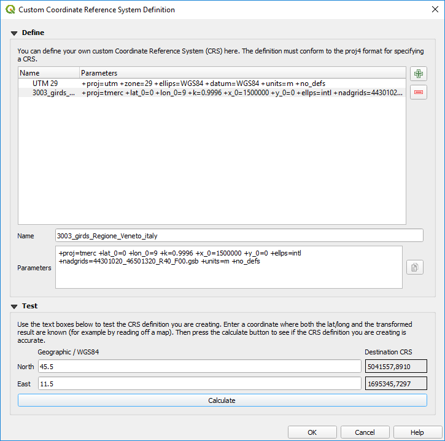

10. ပုံရိပ်ချခြင်း များဖြင့် အလုပ်လုပ်ခြင်း (Working with Projections)
Coordinate Reference System (ကိုဩဒိနိတ်အညွှန်းပြစနစ်) သို့မဟုတ် CRS သည် ကမ္ဘာ့မြေမျက်နှာပြင်ပေါ်ရှိ တည်နေရာကို Coordinate (ကိုဩဒိနိတ်) ကိန်းဂဏန်းများဖြင့် ဆက်စပ်ဖော်ပြထားသော နည်းလမ်းတစ်ခုဖြစ်သည်။ QGIS သည် ခန့်မှန်းခြေအားဖြင့် စံ CRS စနစ်ပေါင်း 7,000 ကို ပံ့ပိုးပေးပြီး၊ မတူညီသည့်အသုံးပြုမှုများ၊ အားသာချက်များနှင့် အားနည်းချက်များလည်း ရှိကြပါသည်။ ဒေတာများနှင့် QGIS project များအတွက် သင့်လျော်သော reference system အား ရွေးချယ်ခြင်းသည် ရှုပ်ထွေးသည့် လုပ်ငန်းဆောင်တာတစ်ခု ဖြစ်နိုင်သည်။ သို့သော် ကံကောင်းစွာ QGIS သည် ထိုရွေးချယ်မှုအား လုပ်ဆောင်ရန် ကူညီဖြေရှင်းပေးပြီး၊ မတူညီသည့် CRS များနှင့် အလုပ်လုပ်ခြင်းကို ဖြစ်နိုင်သမျှ တိကျမှုရှင်းလင်းမှုနှင့် နားလည်မှုများကို ပေးနိုင်ပါသည်။
10.1. Projection ပံ့ပိုးမှုများအကြောင်း (Overview of Projection Support)
QGIS သည် CRS လို့ခေါ်သည့် စနစ်ပေါင်း 7,000 နီးပါးအား ပံ့ပိုးပေးပါသည်။ ယင်း standard CRS များကို European Petroleum Search Group (EPSG)နှင့်
Institut Geographique National de France (IGNF) တို့က သတ်မှတ်ထားသည့် စံနှုန်းသတ်မှတ်ချက်များပေါ်မူတည်၍ အခြေခံသတ်မှတ်ထားသည်။
အဆိုပါ စနစ်များအား QGIS ရှိ “Proj” projection library ထဲတွင် ရယူနိုင်ပါသည်။ ယေဘုယျအားဖြင့် အဆိုပါ standard projection စနစ်များကို
တရားဝင်ဖန်တီးခွင့်အရ သတ်မှတ်ထားပြီး၊ code များဖြင့် ပေါင်းစပ်ထားသည်။ ယင်းတွင် တရားဝင်ဖန်တီးခွင့်ဆိုသည်မှာ “IGNF” သို့မဟုတ် “EPSG” လို့ခေါ်သည့်
အဖွဲ့အစည်း၏ အမည်ဖြစ်ပါသည်။ Code ဆိုသည်မှာ သီးသန့် CRS တစ်ခုစီနှင့် သက်ဆိုင်သည့် ကိန်းဂဏန်းဖြစ်သည်။
ဉပမာအားဖြင့် - အသုံးများသော WGS 84 latitude/longitude CRS အား code EPSG:4326 ဖြင့် သတ်မှတ်ထားရှိပြီး၊
web mapping standard CRS code ကို EPSG:3857 ဖြင့် သတ်မှတ်ထားသည်။
အသုံးပြုသူများ ဖန်တီးထားသော CRS များကို အသုံးပြုသူ၏ CRS database တွင် သိမ်းဆည်းထားပါသည်။ ကိုယ်တိုင်စိတ်ကြိုက် ဖန်တီးထားသော coordinate reference system များအား စီမံလုပ်ဆောင်ခြင်းဆိုင်ရာ အချက်အလက်များအတွက် ကိုယ်တိုင်ဆောက် CRS စနစ် (Custom Coordinate Reference System) အပိုင်းတွင် ကြည့်ရှု့နိုင်ပါသည်။
10.2. Layer ၏ Coordinate Reference System များ
Data များကို မိမိသတ်မှတ်လိုသည့် CRS စနစ်တစ်ခုသို့ မှန်ကန်တိကျစွာ project လုပ်လိုလျှင် data တွင် coordinate reference system နှင့် ပတ်သက်သော ကိန်းဂဏန်းအချက်အလက်များ ပါဝင်ရမည်ဖြစ်သည်။ သို့မဟုတ် layer တွင် မှန်ကန်သော CRS ကိုသတ်မှတ်ပေးရန် လိုအပ်ပါသည်။ PostGIS layer များအတွက် ၎င်း PostGIS layer များကို ရေးဆွဲသည့်အခါ QGIS သည် တိကျစွာ သတ်မှတ်ထားသော spatial reference identifier ကိန်းဂဏန်းတန်ဖိုးများကို အသုံးပြုသည်။ GDAL မှ ထောက်ပံ့ပေးထားသော data များအတွက် QGIS သည် CRS သီးခြားသတ်မှတ်ခြင်း၏ အသိအမှတ်ပြုထားသောနည်းလမ်းများ တည်ရှိမှုပေါ်တွင် မူတည်သည်။ ဥပမာအားဖြင့် - Shapefile format အတွက် layer ၏ CRS ကို ကိုယ်စားပြုသည့် (ESRI အသိအမှတ်ပြုထားသော စာသား) ESRI Well-Known Text(WKT) ပါဝင်သော ဖိုင်တစ်ခု ပါဝင်ပါသည်။ အဆိုပါ projection file သည် .shp file နှင့် .prj extension များနှင့် နာမည်တူညီပါသည်။ ဉပမာအားဖြင့် - alaska.shp တွင် alaska.prj ဟု အမည်ရသော သက်ဆိုင်ရာ projection file ပါရှိပါသည်။
QGIS အတွင်းသို့ layer တစ်ခုအား ထည့်သွင်းလိုက်သည့်အခါတိုင်း QGIS သည် အလိုအလျောက် အဆိုပါ layer အတွက် မှန်ကန်သော CRS စနစ်ကို ပြောင်းလဲပေးသည်။ အချို့ကိစ္စများတွင် လုပ်ဆောင်မပေးနိုင်ပါ၊ ဉပမာ - layer သည် CRS အချက်အလက်များပါဝင်မှုမရှိသည့်အခါ။ Layer တစ်ခု အတွက် မှန်ကန်သည့် CRS စနစ်ကို အလိုအလျောက်မဆုံးဖြတ်နိုင်သည့်အခါ QGIS တွင် ပြင်ဆင်သတ်မှတ်နိုင်သည်-
 ကိုဖွင့်ပါ-
ကိုဖွင့်ပါ-
Fig. 10.1 QGIS options dialog အတွင်းရှိ CRS tab
CRS for layers group အောက်တွင် when a new layer is created, or when a layer is loaded that has no CRS လုပ်ဆောင်ရန်အတွက် အောက်ဖော်ပြပါများထဲမှ တစ်ခုကို ရွေးချယ်ပါ-
 Leave as unknown CRS (take no action) -
Layer တစ်ခုအား CRS စနစ် မပါပဲ ထည့်သွင်းသည့်အခါ CRS စနစ်တစ်ခုကို ချက်ချင်းရွေးချယ်ရန် မလိုအပ်ပါ။ နောက်မှ CRS စနစ်အား ရွေးချယ်သတ်မှတ်နိုင်ပါသည်။ တစ်ကြိမ်တည်းနှင့် layer များစွာ ထည့်သွင်းသည့်အခါ အဆင်ပြေပါသည်။ အဆိုပါ layer များကို Layers panel ထဲရှိ layer ၏ ဘေးတွင်
Leave as unknown CRS (take no action) -
Layer တစ်ခုအား CRS စနစ် မပါပဲ ထည့်သွင်းသည့်အခါ CRS စနစ်တစ်ခုကို ချက်ချင်းရွေးချယ်ရန် မလိုအပ်ပါ။ နောက်မှ CRS စနစ်အား ရွေးချယ်သတ်မှတ်နိုင်ပါသည်။ တစ်ကြိမ်တည်းနှင့် layer များစွာ ထည့်သွင်းသည့်အခါ အဆင်ပြေပါသည်။ အဆိုပါ layer များကို Layers panel ထဲရှိ layer ၏ ဘေးတွင်  icon ကိုကြည့်ခြင်းအားဖြင့် သိနိုင်မည်ဖြစ်ပါသည်။ ထို layer များအားလုံးသည် georeference မပါရှိပဲ ရှိနေမည်ဖြစ်သည်။ Layer တွင်ပါရှိသော coordinate များကို ကမ္ဘာပေါ် ရှိတည်နေရာနှင့် မသက်ဆိုင်သည့်၊ ကိန်းဂဏန်းသက်သက်အဖြစ်သာ မှတ်ယူမည်ဖြစ်သည်။ ဆိုလိုသည်မှာ project ကို CRS မသတ်မှတ်ပဲ ထားရှိသည့် layer များဖြစ်သွားသည့် အတိုင်းဖြစ်မည်ဖြစ်သည်။
icon ကိုကြည့်ခြင်းအားဖြင့် သိနိုင်မည်ဖြစ်ပါသည်။ ထို layer များအားလုံးသည် georeference မပါရှိပဲ ရှိနေမည်ဖြစ်သည်။ Layer တွင်ပါရှိသော coordinate များကို ကမ္ဘာပေါ် ရှိတည်နေရာနှင့် မသက်ဆိုင်သည့်၊ ကိန်းဂဏန်းသက်သက်အဖြစ်သာ မှတ်ယူမည်ဖြစ်သည်။ ဆိုလိုသည်မှာ project ကို CRS မသတ်မှတ်ပဲ ထားရှိသည့် layer များဖြစ်သွားသည့် အတိုင်းဖြစ်မည်ဖြစ်သည်။ Prompt for CRS - သည် CRS ကို ရွေးချယ်ရန်ဖော်ပြပေးပါမည်။ ရွေးချယ်မှုမှားလျှင် ကမ္ဘာမြေပြင်ရှိ တည်နေရာအလွဲကို ရွေးချယ်သွားလိမ့်မည်ဖြစ်သဖြင့် မှန်ကန်စွာရွေးချယ်မိစေရန် အလွန်အရေးကြီးပါသည်။ တခါတရံ metadata နှင့်အတူ ပါလာသည့်အချက်အလက်များသည် layer အား မှန်ကန်သော CRS ကို ဖော်ပြပေးပါသည်။ သို့သော် အချို့အခြေအနေများတွင်မှု မှန်ကန်သော CRS ကို ဆုံးဖြတ်ရန် မူရင်း data ဖန်တီးသူအား ဆက်သွယ်မေးမြန်းရန် လိုအပ်ပါသည်။
Prompt for CRS - သည် CRS ကို ရွေးချယ်ရန်ဖော်ပြပေးပါမည်။ ရွေးချယ်မှုမှားလျှင် ကမ္ဘာမြေပြင်ရှိ တည်နေရာအလွဲကို ရွေးချယ်သွားလိမ့်မည်ဖြစ်သဖြင့် မှန်ကန်စွာရွေးချယ်မိစေရန် အလွန်အရေးကြီးပါသည်။ တခါတရံ metadata နှင့်အတူ ပါလာသည့်အချက်အလက်များသည် layer အား မှန်ကန်သော CRS ကို ဖော်ပြပေးပါသည်။ သို့သော် အချို့အခြေအနေများတွင်မှု မှန်ကန်သော CRS ကို ဆုံးဖြတ်ရန် မူရင်း data ဖန်တီးသူအား ဆက်သွယ်မေးမြန်းရန် လိုအပ်ပါသည်။- Use project CRS (Project ၏ CRS အတိုင်းအသုံးပြုခြင်း)
- Use default layer CRS (Default layer ၏ CRS အတိုင်းအသုံးပြုခြင်း)၊ အပေါ်တွင်ရှိသည့် Default CRS for layers combobox တွင်သတ်မှတ်ထားသည့်အတိုင်းအသုံးပြုပါသည်။
Tip
လုပ်ဆောင်မှုများတွင် မှားယွင်းသော CRS စနစ် ရှိသော သို့မဟုတ် မည်သည့် CRS စနစ်မျှ မပါရှိသော layer မျိုးစုံအား တူညီသော CRS စနစ်အဖြစ် သတ်မှတ်ရာတွင်-
Layers panel ထဲရှိ layer များအား ရွေးပါ။
Ctrl+Shift+C ကိုနှိပ်ပါ။ ရွေးထားသော layer များထဲမှ တစ်ခုပေါ်တွင် right-click နှိပ်နိုင်သည် သို့မဟုတ် ကို ရွေးချယ်နိုင်ပါသည်။
အသုံးပြုရန် CRS အမှန်အား ရှာဖွေရွေးချယ်ပါ။
ထို့နောက် OK ကိုနှိပ်ပါ။ layers properties dialog ၏ Source tab ထဲတွင် ရွေးချယ်ထားသော CRS မှန် မမှန် အတည်ပြုနိုင်သည်။
မှတ်သားထားရမည်မှာ - Setting ထဲရှိ CRS စနစ်ကို ပြောင်းထားခြင်းသည် တည်ရှိနေသော data source အား ပြောင်းလဲမသွားစေနိုင်ပါ၊ လက်ရှိလုပ်ဆောင်နေသော QGIS project ရှိ layer မှ မူရင်း ကိုဩဒိနိတ်များကို QGIS က မည်သို့အဓိပ္ပါယ်ဖော်မည်ဆိုသည့် အရာကိုပဲ ပြောင်းလဲပေးခြင်းဖြစ်ပါသည်။
10.3. Project Coordinate Reference System များ
QGIS ရှိ project တိုင်းတွင် သက်ဆိုင်ရာ Coordinate Reference System စနစ်တစ်ခု ရှိပါသည်။ QGIS map canvas အတွင်း ၎င်း၏မူရင်း ကိုဩဒိနိတ်များမှ မြေပုံအပြန့်အနေအထားသို့ render လုပ်ရန် data များကို မည်ကဲ့သို့ project (ပုံရိပ်ချ) လုပ်မည်ဆိုသည်ကို project CRS က ဆုံးဖြတ်ပေးသည်။
QGIS သည် raster data နှင့် vector data နှစ်မျိုးလုံးအတွက် “on the fly” CRS transformation (လုပ်ဆောင်နေစဉ် CRS ပြောင်းလဲခြင်း) ကို ထောက်ပံ့ပေးသည်။ ဆိုလိုသည်မှာ လုပ်ဆောင်နေသော project ထဲရှိ သီးခြား map layer များ၏ CRS အခြေအနေများကို ထည့်သွင်းမစဉ်းစားဘဲ၊ လုပ်ဆောင်နေသော project အတွက် အသုံးများသည့် CRS စနစ်အား အလိုအလျောက်ပြောင်းပေးပါသည်။ နောက်ကွယ်တွင် layer များအား တစ်ခုနှင့်တစ်ခု တိကျသော တည်နေရာများ ရရှိစေရန် QGIS သည် project အတွင်း ရှိသော layer များအားလုံးကို project ၏ CRS အဖြစ်သို့ ပြောင်းပေးပါသည်။
QGIS project များအတွက် သင့်လျော်သော CRS စနစ်ရွေးချယ်မှုတစ်ခုကို ပြုလုပ်ရန် အရေးကြီးပါသည်။ CRS စနစ်အား မမှန်မကန်ရွေးချယ်ထားမှုသည် မြေပုံများအား တွန့်လိမ်စေသည့်အပြင် ကမ္ဘာ့မြေပြင်ရှိ အရာဝတ္ထုများ၏ တည်နေရာများနှင့် အရွယ်အစားများကို ဖော်ပြမှုတွင် လက်ရှိမြေမျက်နှာပြင်နှင့်ဆက်စပ်သောတိကျမှုကို အားနည်းစေသည်။ ပုံမှန်အားဖြင့် ပိုမိုသေးငယ်သော တည်နေရာများတွင် ပြုလုပ်ဆောင်ရွက်မည်ဆိုလျှင် အုပ်ချုပ်မှုနယ်နိမိတ်ဧရိယာ သို့မဟုတ် သီးခြားနိုင်ငံတစ်ခု အတွင်း အသုံးပြုသော စံ CRS များ ရှိပါလိမ့်မည်။ မြေပုံရေးဆွဲနေသည့် ဧရိယာအတွက် သင့်လျော်သော CRS တစ်ခု သို့မဟုတ် စံ CRS ရွေးချယ်မှုသည် အရေးကြီးပါသည်။ သို့မှသာ QGIS project သည် အဆိုပါ စံနှုန်းများအတိုင်း လုပ်ဆောင်မည်ဖြစ်ပါသည်။
ပုံမှန်အားဖြင့် QGIS သည် ကမ္ဘာလုံးဆိုင်ရာ ပုံမှန် (default) projection စနစ်ကို အသုံးပြုပြီး project အသစ်တစ်ခုကို စတင်ဖွင့်ပါသည်။ ၎င်း default CRS သည် EPSG:4326 ဖြစ်သည် (“WGS 84” စနစ်ဟုလည်း ခေါ်ဆိုပါသည်)၊ အဆိုပါစနစ်သည် latitude/longitude ကိုအခြေခံထားသည့် ကမ္ဘာသုံး (ဘုံသုံး) reference system တစ်ခုဖြစ်ပါသည်။ အဆိုပါ default CRS စနစ်ကို အောက်ရှိ CRS tab ထဲတွင် CRS for New Projects မှတဆင့် ပြောင်းလဲနိုင်ပါသည်။ (Fig. 10.1 ပုံတွင် ကြည့်ရှုနိုင်ပါသည်) Project အသစ်တစ်ခုတွင် သွင်းထားသော ပထမ layer ၏ CRS စနစ်နှင့် ကိုက်ညီရန်အတွက် project ၏ CRS စနစ်ကို အလိုအလျောက်ပြောင်းနိုင်သော နည်းလမ်း တစ်ခုရှိသည်။ သို့မဟုတ် အသစ်ပြုလုပ်ထားသော project များအတွက် အသုံးပြုရန် မတူညီသည့် default CRS တစ်ခုကို ရွေးချယ် အသုံးပြုနိုင်ပါသည်။ ဤရွေးချယ်မှုကို နောက်အသုံးပြုမည့် QGIS ကဏ္ဍများတွင် အဆင်သင့်အသုံးပြုရန် သိမ်းဆည်ထားမည်ဖြစ်ပါသည်။
Project CRS ကို dialog ၏ CRS tab မှတဆင့် သတ်မှတ်နိုင်ပါသည်။ ၎င်းကို QGIS status bar ၏ ညာဘက်အောက်ခြေတွင် တွေ့မြင်နိုင်သည်။

Fig. 10.2 Project ဂုဏ်သတ္တိများ Dialog
ရွေးချယ်စရာနည်းလမ်းများမှာ-
 No CRS (or unknown/non-Earth projection) - ဤ setting တွင် အမှန်ခြစ်ပေးခြင်းသည် GIS project အတွင်းရှိ projection အားလုံးကို ရပ်တန့်စေသည်။ ၎င်းသည် ကမ္ဘာမြေပြင်ပေါ်ရှိတည်နေရာများနှင့် ချိတ်ဆက်ခြင်းမရှိတော့ပဲ layer များနှင့် မြေပုံ ကိုဩဒိနိတ်များအားလုံးကို ရိုးရိုး 2D Cartesian ကိုဩဒိနိတ်များကဲ့သို့ ဖြစ်သွားစေပါသည်။ ၎င်းကို layer CRS တစ်ခု အား ခန့်မှန်းသိရှိရန် (၎င်း၏ မူရင်း ကိုဩဒိနိတ်များပေါ်တွင် အခြေခံပြီး) သို့မဟုတ် အသေးအမွှားအရာများမြေပုံဆွဲခြင်း၊ အဆောက်အဦးမြေပုံများဆွဲခြင်းနှင့် role-playing game မြေပုံများကဲ့သို့ ကမ္ဘာမြေပြင်နှင့်မသက်ဆိုင်သည့် (non earth) ကိစ္စများအတွက် QGIS ကိုဖန်တီးသည့်အခါ အသုံးပြုနိုင်ပါသည်။ ဤကိစ္စတွင်-
No CRS (or unknown/non-Earth projection) - ဤ setting တွင် အမှန်ခြစ်ပေးခြင်းသည် GIS project အတွင်းရှိ projection အားလုံးကို ရပ်တန့်စေသည်။ ၎င်းသည် ကမ္ဘာမြေပြင်ပေါ်ရှိတည်နေရာများနှင့် ချိတ်ဆက်ခြင်းမရှိတော့ပဲ layer များနှင့် မြေပုံ ကိုဩဒိနိတ်များအားလုံးကို ရိုးရိုး 2D Cartesian ကိုဩဒိနိတ်များကဲ့သို့ ဖြစ်သွားစေပါသည်။ ၎င်းကို layer CRS တစ်ခု အား ခန့်မှန်းသိရှိရန် (၎င်း၏ မူရင်း ကိုဩဒိနိတ်များပေါ်တွင် အခြေခံပြီး) သို့မဟုတ် အသေးအမွှားအရာများမြေပုံဆွဲခြင်း၊ အဆောက်အဦးမြေပုံများဆွဲခြင်းနှင့် role-playing game မြေပုံများကဲ့သို့ ကမ္ဘာမြေပြင်နှင့်မသက်ဆိုင်သည့် (non earth) ကိစ္စများအတွက် QGIS ကိုဖန်တီးသည့်အခါ အသုံးပြုနိုင်ပါသည်။ ဤကိစ္စတွင်-Feature များအား ၎င်းတို့၏ သက်ဆိုင်ရာ မူရင်း ကိုဩဒိနိတ်များကို အသုံးပြုပြီး ရေးဆွဲထားသဖြင့် layer များအား ပုံဖော်ပြသနေစဉ် reprojection ပြုလုပ်မည်မဟုတ်ပါ။
Ellipsoid ကို ပိတ်ထားပြီး
None/Planimetricကို ဖြစ်စေပါသည်။အကွာအဝေး တိုင်းတာမှုများ၊ ဧရိယာတိုင်းတာမှုများနှင့် ကိုဩဒိနိတ် ပြသမှုများကို ပိတ်ထားပြီး “unknown units” (ယူနစ်မသိ) ဖြစ်စေပါသည်။ အတိုင်းအတာများအားလုံးသည် unknown map unit များတွင် လုပ်ဆောင်သဖြင့် အတိုင်းအတာပြောင်းလဲမှုများပြုလုပ်ရန် မဖြစ်နိုင်ပါ။
သို့မဟုတ် geographic ၊ projected ၊ သို့မဟုတ် user-defined ဖြစ်နိုင်သည့် ရှိနေပြီးသား coordinate reference system စနစ်တစ်ခု။ ကမ္ဘာမြေပြင်ရှိ CRS extent (နယ်ပယ်အကျယ်အဝန်း) ကို အကြိုပြသပေးထားသည့်အရာ (preview) သည် သင့်လျော်သော စနစ်တစ်ခုခုအား ရွေးချယ်ရန် အထောက်အကူပြုပါသည်။ Project ထဲသို့ ထည့်သွင်းလိုက်သည့် layer များကို ၎င်းတို့၏ မူလ CRS များကို မစဉ်းစားပဲ layer များထပ်နိုင်ရန်အတွက် ရွေးချယ်ထားသော CRS အဖြစ်သို့ ရွှေ့ပြောင်းပေးပါသည်။ ယူနစ်အတိုင်းအတာများအသုံးပြုမှုနှင့် ellipsoid setting များကို ချိန်ညှိနိုင်ပြီး၊ တွက်ချက်တိုင်းတာမှုများလည်း ဆောင်ရွက်နိုင်ပါသည်။
QGIS project အတွက် CRS အသစ်အား ရွေးချယ်သည့်အခါတိုင်း ရွေးချယ်ထားသော CRS စနစ်နှင့် ကိုက်ညီရန်အတွက် Project properties dialog() ရှိ General tab ထဲတွင် အတိုင်းအတာယူနစ်များကို အလိုအလျောက် ပြောင်းပေးပါသည်။ ဉပမာအားဖြင့် - အချို့ CRS များသည် ၎င်းတို့၏ ကိုဩဒိနိတ်များကို မီတာ (ယူနစ်) အစား ပေ (ယူနစ်) ဖြင့်သတ်မှတ်သည်။ ထို့ကြောင့် QGIS project ကို ၎င်း CRS များထဲမှ တစ်ခုဖြင့် သတ်မှတ်ခြင်းသည် project အတွင်းတိုင်းတာမှုများအတွက် ပေ (ယူနစ်)ကို ပုံမှန် (default) ယူနစ်ဖြစ်စေပါသည်။
Tip
Layer တစ်ခု၏ CRS ဖြင့် Project အတွက် CRS သတ်မှတ်ခြင်း
Layer CRS စနစ်တစ်ခုအား အသုံးပြုပြီး project ရှိ CRS စနစ် အား သတ်မှတ်နိုင်သည်-
Layers panel ထဲတွင် CRS အသုံးပြုလိုသည့် layer ပေါ်တွင် right-click နှိပ်ပါ။
Set project CRS from Layer ကိုရွေးချယ်ပါ။
Layer ၏ CRS ကို အသုံးပြုပြီး project ၏ CRS ကို ပြန်လည်သတ်မှတ်ပေးပါသည်။ မြေပုံမြင်ကွင်း extent ၊ ကိုဩဒိနိတ် တန်ဖိုးပြသမှုနှင့် project အတွင်းရှိ layer များအားလုံးသည် project CRS အသစ်ပေါ်မူတည်ပြီး update ဖြစ်သွားပါမည်။
10.4. ကိုသြဒိနိတ်ရည်ညွှန်းစနစ်ရွေးချယ်ရာ (Coordinate Reference System Selector)

Fig. 10.3 CRS Selector
ယခု dialog သည် project တစ်ခု သို့မဟုတ် layer တစ်ခု၏ Coordinate Reference System တစ်ခုအား သတ်မှတ်ပေးရန် ကူညီပေးပြီး projection databases တစ်ခုလည်း ပါရှိပါသည်။ Dialog ထဲရှိ အရာများမှာ-
Filter (စစ်ထုတ်ခြင်း) - Coordinate Reference System အတွက် EPSG ကုဒ် ၊ identifier သို့မဟုတ် အမည်ကို သိလျှင် search feature ကို အသုံးပြုပြီး ရှာဖွေနိုင်သည်။ ထို့နောက် EPSG ကုဒ် ၊ identifier သို့မဟုတ် အမည် တစ်ခုခုအား ရိုက်ထည့်ပါ။
Recently used coordinate reference systems (မကြာသေးမီကသုံးခဲ့သော CRS များ) - နေ့စဉ် GIS အလုပ် လုပ်ဆောင်ချက်များတွင် မကြာခဏ အသုံးပြုနေသော အချို့ CRS များရှိလျှင်၊ ၎င်း CRS များကို စာရင်းထဲတွင် ဖော်ပြပါလိမ့်မည်။ ထို့နောက် ဆက်စပ်သော CRS တစ်ခုကို ရွေးချယ်ရန် ၎င်းအရာများထဲမှ တစ်ခုအား Click နှိပ်ပြီး ရွေးချယ်ပါ။
Coordinate reference systems of the world (ကမ္ဘာကြီး၏ CRS များ) - ၎င်းသည် QGIS တွင်လုပ်ဆောင်နိုင်သော CRS များအားလုံး၏စာရင်း ဖြစ်ပါသည်။ ၎င်းတွင် Geographic ၊ Projected နှင့် Custom coordinate reference system များ အားလုံးပါဝင်ပါသည်။ CRS တစ်ခုခုအား ရွေးချယ်သတ်မှတ်ရန်အတွက် သင့်လျော်သော node (ဆုံချက်) အား ဖြန့်ကြည့်ခြင်းအားဖြင့် ၎င်းစာရင်းထဲမှ CRS တစ်ခုကို ရွေးချယ်ပါ။ လက်ရှိအသက်ဝင်နေသည့် CRS သည် ရွေးချယ်ပြီးသား ဖြစ်နေပါမည်။
PROJ text (Projection စာသား) - ၎င်းသည် PROJ projection engine မှ အသုံးပြုသော CRS string ဖြစ်ပါသည်။ ၎င်းစာသားသည် ဖတ်ရှုရန်သာဖြစ်ပြီး သတင်းအချက်အလက်ထောက်ပံ့ပေးနိုင်ရန်အတွက် ဖြစ်ပါသည်။
ယခင်အသုံးပြုထားခဲ့သည့် စာရင်းထဲမှ CRS ကို ဖယ်ထုတ်ခြင်း ပြုလုပ်ရန်အတွက် နည်းလမ်းများစွာရှိပါသည်-
ညာဘက်ပိုင်းရှိ
 Remove from recently used CRS ခလုတ်အားနှိပ်ပါ။
Remove from recently used CRS ခလုတ်အားနှိပ်ပါ။မိမိဖယ်ထုတ်ချင်သော CRS အား ရွေးချယ်ပြီးနောက် Del အားနှိပ်ပါ။
ယခင်အသုံးပြုထားသော CRS အား Right-click နှိပ်ပြီး၊ ရွေးချယ်ထားသော CRS အား ဖယ်ရှားရန်
Remove selected CRS from recently used CRS အား ရွေးချယ်ပါ သို့မဟုတ် ယခင်အသုံးပြုထားသော CRS အားလုံးကို ဖယ်ရှားရန်  Clear all recently used CRS အား ရွေးချယ်ပါ။
Clear all recently used CRS အား ရွေးချယ်ပါ။
CRS selector သည် အသုံးပြုရန် ရွေးချယ်ထားသော CRS အတွက် ပထဝီဝင်တည်နေရာအား အကြမ်းမျဉ်း (preview) ကြိုတင်ပြသပေးပါသည်။ CRS များစွာကို အရွယ်အစားသေးသော ပထဝီဝင်တည်နေရာများအတွက်သာ ပုံဖော်ဖန်တီးထားပြီး၊ ပုံဖော်ဖန်တီးထားခဲ့သော တည်နေရာ၏အပြင်ဘက်များ အသုံးမပြုသင့်ပါ။ စာရင်းထဲမှ CRS စနစ်တစ်ခုအား ရွေးချယ်သည့်အခါတိုင်း ကြိုတင်ပြသထားသော မြေပုံများက သင့်လျော်သော အသုံးပြုတည်နေရာအား ပုံဖော်ပေးသည်။ ထို့အပြင် ၎င်းကြိုတင်ပြသထားသော မြေပုံသည် လက်ရှိအဓိက canvas ၏ မြေပုံ extent ကိုဖော်ပြပေးသည့် အညွှန်းကိန်းတစ်ခုကိုလည်း ပြသပေးသည်။
10.5. ကိုယ်တိုင်ဆောက် CRS စနစ် (Custom Coordinate Reference System)
QGIS က လိုအပ်သည့် coordinate reference system အား မထောက့်ပံ့နိုင်လျှင်၊ စိတ်ကြိုက် CRS တစ်ခု (Custom CRS) ကို သတ်မှတ်အသုံးပြုနိုင်ပါသည်။ CRS စနစ်အား သတ်မှတ်ရန်အတွက် menu ထဲမှ  Custom CRS… ကို ရွေးချယ်ပါ။ Custom CRS များကို QGIS user database ထဲတွင် သိမ်းဆည်းထားပါသည်။ ထို database ထဲတွင် custom CRS များအပြင် spatial bookmark များနှင့် အခြားသော custom data များ ပါဝင်ပါသည်။
Custom CRS… ကို ရွေးချယ်ပါ။ Custom CRS များကို QGIS user database ထဲတွင် သိမ်းဆည်းထားပါသည်။ ထို database ထဲတွင် custom CRS များအပြင် spatial bookmark များနှင့် အခြားသော custom data များ ပါဝင်ပါသည်။
QGIS တွင် custom CRS အား သတ်မှတ်ရာတွင် ROJ projection library အား ကောင်းကောင်း နားလည်သဘောပေါက်ရန် လိုအပ်ပါသည်။ စတင်လေ့လာရန်အတွက် “Cartographic Projection Procedures for the UNIX Environment - A User’s Manual” by Gerald I. Evenden, U.S. Geological Survey Open-File Report 90-284, 1990 စာအုပ်ကို ကိုးကားပါ။ (https://pubs.usgs.gov/of/1990/of90-284/ofr90-284.pdf တွင် ရယူနိုင်ပါသည်)
ဤ manual စာအုပ်သည် proj အသုံးပြုပုံနှင့် ဆက်နွယ်သော command line အသုံးပြုပုံများအား ဖော်ပြပေးထားသည်။ proj ဖြင့်အသုံးပြုထားသော cartographic parameter (မြေပုံရေးဆွဲခြင်းနှင့်ဆိုင်သည့် သတ်မှတ်ချက်) များကို ဤအသုံးပြုသူ manual စာအုပ်တွင် ဖော်ပြထားရှိပြီး ၎င်းသည် QGIS က အသုံးပြုနေသော အရာများနှင့် တူပါသည်။
User CRS အတွက် သတ်မှတ်ရန် Custom Coordinate Reference System Definition dialog သည် parameter ၂ ခုသာလျှင်လိုအပ်သည်-
A descriptive name (ဖော်ပြပေးမည့် နာမည်တစ်ခု)
The cartographic parameters in PROJ or WKT format (PROJ သို့မဟုတ် WKT format ဖြင့် cartographic parameter များ)
CRS စနစ် အသစ်တစ်ခုအား ဖန်တီးထည့်သွင်းရန်-
 Add new CRS button အား click နှိပ်ပါ။
Add new CRS button အား click နှိပ်ပါ။ဖော်ပြမည့် အမည်တစ်ခု ထည့်သွင်းပါ။
Format ကို ရွေးချယ်ပါ။ ၎င်းသည် Proj String သို့မဟုတ် WKT ဖြစ်နိုင်သည်။
CRS Parameters များထည့်သွင်းပါ။
Note
CRS definition များကို WKT format ဖြင့်သိမ်းဆည်းခြင်းကို ဦးစားပေးပါ
Proj Stringနှင့်WKTformat များအား ထောက်ပံ့ပေးထားသော်လည်း WKT format ထဲတွင် projection အဓိပ္ပါယ်သတ်မှတ်ချက်များကို သိမ်းဆည်းထားခြင်းကို အထူးအကြံပြုပါသည်။ ထို့ကြောင့် အဓိပ္ပါယ်သတ်မှတ်ချက် proj format ဖြင့်ရှိနေလျှင် ၎င်း format အား ရွေးချယ်ပြီး parameter များအားထည့်သွင်းပါ။ ထို့နောက် WKT format အား ပြောင်းလိုက်ပါ။ QGIS က WKT format သို့ အဓိပ္ပါယ်သတ်မှတ်ချက်ကို ပြောင်းပေးပြီး ၎င်းကို နောက်ပိုင်းတွင် သိမ်းဆည်းထားနိုင်ပါသည်။CRS အဓိပ္ပါယ်သတ်မှတ်ချက်သည် လက်ခံနိုင်သော projection အဓိပ္ပါယ်သတ်မှတ်ချက် ဖြစ်မဖြစ်ကို စစ်ဆေးရန် Validate အား click နှိပ်ပါ။

Fig. 10.4 စိတ်ကြိုက် CRS တစ်ခုဖန်တီးခြင်း Dialog
ကောင်းမွန်သောရလာဒ်များ ဖြစ်မဖြစ်ကိုကြည့်ရှုရန် CRS parameter များကို စမ်းသပ်နိုင်သည်။ ထိုသို့လုပ်ဆောင်ရန်အတွက် North နှင့် East fields ထဲတွင် သိရှိပြီးသား WGS 84 latitude နှင့် longitude တန်ဖိုးများ ထည့်သွင်းပါ။ Calculate အား click နှိပ်ပြီး ယခင် coordinate reference system ရှိ သိရှိပြီးသားတန်ဖိုးများနှင့် ရလဒ်များအား နှိုင်းယှဉ်ပါ။
10.5.1. NTv2-transformation ကို QGIS တွင် ပေါင်းစပ်အသုံးပြုခြင်း (Integrate an NTv2-transformation in QGIS)
QGIS တွင် NTv2 transformation file တစ်ခုကို ပေါင်းစပ်အသုံးပြုရန် နောက်ထပ်အဆင့်တစ်ဆင့်လိုအပ်ပါသည်-
QGIS မှ အသုံးပြုသည့် CRS/Proj folder ထဲတွင် NTv2 file (.gsb) ကိုထားပါ။ (ဉပမာ - Window အသုံးပြုသူများအတွက်
C:\OSGeo4W64\share\proj)Custom Coordinate Reference System Definition () ၏ Parameters field ရှိ Proj definition တွင် nadgrids (
+nadgrids=nameofthefile.gsb) ကို ပေါင်းထည့်ပါ။ Fig. 10.5 NTv2 transformation တစ်ခုကို ပြင်ဆင်သတ်မှတ်ခြင်း
10.6. ရည်ညွှန်းမျက်နှာပြင် ပြောင်းခြင်း (Datum Transformations)
QGIS တွင် ‘on-the-fly’ CRS transformation ကို default အနေဖြင့်ထည့်သွင်းပေးထားပါသည်။ ဆိုလိုသည်မှာ မတူညီသော coordinate system များဖြင့် layer များကို အသုံးပြုသည့်အချိန်တိုင်း QGIS သည် ၎င်းတို့ကို project CRS သို့ ပြန်လည်ပြောင်းပေးပါသည်။ အချို့သော CRS များအတွက် project ၏ CRS သို့ reproject ပြုလုပ်ပေးနိုင်သော ဖြစ်နိုင်ခြေရှိသည့်ပြောင်းလဲမှုများ အများအပြားရှိပါသည်။
ပုံမှန်အားဖြင့် QGIS သည် ရရှိနိုင်သည့် အတိကျဆုံး transformation ကို အသုံးပြုရန် ပြုလုပ်ပါလိမ့်မည်။ သို့သော် အချို့သော ဖြစ်ရပ်များ၊ ဥပမာအားဖြင့် - transformation တစ်ခုကို အသုံးပြုရန် အပို ပံ့ပိုးဖြည့်ဆည်းပေးသော file (support file) များလိုအပ်သည့်ဖြစ်ရပ်များတွင် မဖြစ်နိုင်ပါ။ လက်ရှိအသုံးပြုရန် အဆင်သင့်မဖြစ်သေးသော်လည်း ပိုမိုတိကျသော transformation တစ်ခု ရနိုင်သည့်အချိန်တိုင်း QGIS က ပိုမိုတိကျသော transformation ကို အသုံးပြုရန် သတိပေး message ကိုဖော်ပြပေးပြီး မိမိ system ထဲ၌ မည်သို့ အသုံးပြုရမည်ဆိုသည့် နည်းလမ်းကိုပါ ပြသပေးလိမ့်မည်။ ပုံမှန်အားဖြင့် ၎င်းသည် ပြင်ပ transformation support file package တစ်ခု download ပြုလုပ်ရန် လိုအပ်ပြီး အဆိုပါ file များကို မိမိ QGIS ရှိ user profile folder အောက်တွင်ရှိသည့် proj folder ထဲတွင် ထည့်သွင်းထားရပါမည်။
ဆန္ဒရှိမည်ဆိုလျှင် CRS နှစ်ခုကြားတွင် ဖြစ်နိုင်သမျှ transformation မျိုးစုံကို ပြုလုပ်နိုင်သည့်အချိန်တိုင်း QGIS သည် တိုက်တွန်းပေးနိုင်ပြီး မိမိ data အတွက် အသင့်လျော်ဆုံးဖြစ်သော transformation ကို ရွေးချယ်နိုင်စေပါသည်။
ဤ စိတ်ကြိုက်ပြင်ဆင်ခြင်းကို Default datum transformations အုပ်စုအောက်ရှိ
tab menu ထဲတွင် ပြုလုပ်ပါသည်။
 Ask for datum transformation if several are available ကို အသုံးပြုခြင်း -
မူလဇစ်မြစ်/ ပြုလုပ်လိုသော CRS အတွဲတစ်ခုအတွက် သင့်လျော်သော datum transformation တစ်ခုထက်မက တည်ရှိသည့်အခါ project တွင်အသုံးပြုရန် အသုံးပြုသူများအနေဖြင့် မည်သည့် datum transformation ကို ရွေးချယ်နိုင်စေရန် dialog တစ်ခု အလိုအလျောက် ပွင့်လာပါလိမ့်မည်။ ၎င်း dialog မှ transformation တစ်ခုကို ရွေးချယ်ပြီးသည့်အခါ Make default checkbox ကို အမှန်ခြစ်ပေးထားပါက ထိုရွေးချယ်ထားမှုကို မှတ်ထားပေးပြီး အသစ်ပြုလုပ်လိုက်သော QGIS project တိုင်းတွင် အလိုအလျောက် အသုံးပြုသွားမည်ဖြစ်ပါသည်။
Ask for datum transformation if several are available ကို အသုံးပြုခြင်း -
မူလဇစ်မြစ်/ ပြုလုပ်လိုသော CRS အတွဲတစ်ခုအတွက် သင့်လျော်သော datum transformation တစ်ခုထက်မက တည်ရှိသည့်အခါ project တွင်အသုံးပြုရန် အသုံးပြုသူများအနေဖြင့် မည်သည့် datum transformation ကို ရွေးချယ်နိုင်စေရန် dialog တစ်ခု အလိုအလျောက် ပွင့်လာပါလိမ့်မည်။ ၎င်း dialog မှ transformation တစ်ခုကို ရွေးချယ်ပြီးသည့်အခါ Make default checkbox ကို အမှန်ခြစ်ပေးထားပါက ထိုရွေးချယ်ထားမှုကို မှတ်ထားပေးပြီး အသစ်ပြုလုပ်လိုက်သော QGIS project တိုင်းတွင် အလိုအလျောက် အသုံးပြုသွားမည်ဖြစ်ပါသည်။Project တစ်ခုထဲသို့ layer တစ်ခုထည့်သွင်းခြင်း သို့မဟုတ် layer တစ်ခုကို reproject (projection တစ်ခုမှတစ်ခုသို့ ပြောင်းလဲခြင်း) ပြုလုပ်သည့်အခါ default အနေဖြင့် အသုံးပြုနိုင်ရန် သင့်လျော်သော Datum transformation စာရင်းတစ်ခုကို သတ်မှတ်ပေးထားခြင်း။
Select Datum Transformations dialog ကို ဖွင့်ရန်
ခလုတ်ကို အသုံးပြုပါ။ ထို့နောက်-Drop-down menu သို့မဟုတ်
 Select CRS widget ကို အသုံးပြုပြီး layer ၏ Source CRS ကို ရွေးချယ်ပါ၊
Select CRS widget ကို အသုံးပြုပြီး layer ၏ Source CRS ကို ရွေးချယ်ပါ၊ထိုနည်းအတိုင်း Destination CRS ကိုလည်း ပြုလုပ်ပေးပါ။
Source မှ destination သို့ ပြောင်းရန် ရနိုင်သော transformation များ စာရင်းကို ဇယားတွင် ပေးပါလိမ့်မည်။ Row တစ်ခုခုကို click ပြုလုပ်ခြင်းသည် transformation ၏ လက်ရှိအသုံးပြုထားသည့် setting များ၊ သက်ဆိုင်ရာ တိကျမှုနှင့် ဧရိယာဆိုင်ရာ အသေးစိတ်အချက်အလက်များကို ပြသပေးပါသည်။

Fig. 10.6 နှစ်သက်ရာ default datum transformation တစ်ခုကို ရွေးချယ်ခြင်း
အချို့သော ဖြစ်ရပ်များတွင်မူ မိမိ system တွင် အသုံးပြုရန်အတွက် transformation သည် ရရှိနိုင်လိမ့်မည်မဟုတ်ပါ။ ဤဖြစ်ရပ်တွင် transformation ကို စာရင်းထဲတွင် (မီးခိုးရောင်) ဖြင့် ပြသနေလိမ့်မည်။ သို့သော် transformation ကို အထောက်အပံ့ပေးသော လိုအပ်သည့် package ကို install (ထည့်သွင်း) မလုပ်မချင်း ၎င်းကို အသုံးပြု၍မရနိုင်ပါ။ ပုံမှန်အားဖြင့် သက်ဆိုင်ရာ grid ကို install (ထည့်သွင်း) လုပ်ရန် နှင့် download ပြုလုပ်ရန် ခလုတ်တစ်ခုကို ဖော်ပြပေးထားပြီး ၎င်းကို user profile directory ရှိ
projfolder ထဲတွင် သိမ်းဆည်းထားပါသည်။မိမိနှစ်သက်သော transformation ကို ရှာဖွေပြီး၊ ရွေးချယ်ပါ။
- Allow fallback transforms if preferred operation fails ကို အမှန်ခြစ်/မဖြစ် သတ်မှတ်ပါ။
OK ကိုနှိပ်ပါ။
Transformation အတွက် အသုံးပြုသည့် Destination CRS ၊ Operation ၊ Source CRS များနှင့် Allow fallback Transforms ကိုခွင့်ပြုထားခြင်းရှိ/မရှိ နှင့်သက်ဆိုင်သော အချက်အလက်များပါဝင်သည့် row တစ်ခုကို Default Datum Transformations အောက်ရှိ table ထဲသို့ ထပ်ပေါင်းထည့်ပေးပါသည်။
ယခုမှစ၍ စာရင်းထဲရှိ entry (
 ) ကို ပြောင်းလိုက်ခြင်း သို့မဟုတ် စာရင်းထဲမှ (
) ကို ပြောင်းလိုက်ခြင်း သို့မဟုတ် စာရင်းထဲမှ ( )ဖယ်ထုတ်လိုက်ခြင်း မပြုလုပ်မချင်း QGIS သည် CRS စနစ် ၂ ခုကြားတွင် နောက်လာမည့် transformation အတွက် ရွေးချယ်ထားသော datum transformation များကို အလိုအလျောက် အသုံးပြုပါသည်။
)ဖယ်ထုတ်လိုက်ခြင်း မပြုလုပ်မချင်း QGIS သည် CRS စနစ် ၂ ခုကြားတွင် နောက်လာမည့် transformation အတွက် ရွေးချယ်ထားသော datum transformation များကို အလိုအလျောက် အသုံးပြုပါသည်။
မိမိ system တွင် အသစ်ပြုလုပ်ဖန်တီးလိုက်သော QGIS project များ အားလုံးသည်
tab တွင် သတ်မှတ်ထားသော Datum transformation များကို ဆက်လက်အသုံးပြုသွားမည်ဖြစ်ပါသည်။ ထို့အပြင် အခြား သီးခြား project တစ်ခုတွင် Project properties dialog
() ၏ CRS tab မှတဆင့် ကိုယ်ပိုင် သီးခြားပြုလုပ်ထားသော transformation များရှိနိုင်ပါသည်။ အဆိုပါ setting များသည် လက်ရှိ လုပ်ဆောင်နေသော project ကိုသာ သက်ရောက်မှုရှိပါသည်။